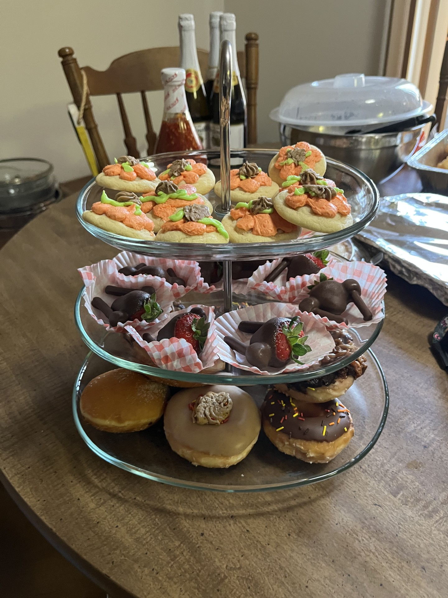

Sugar Cookies
Ingredients:
2 3/4 cup AP flour
1 tsp baking soda
1/2 tsp baking powder
1 cup soften butter
1 1/2 cup sugar
1 egg
1 tsp vanilla extract
Step 1: Combine the flour, baking soda, and baking powder in a seperate bowl.
Step 2: Beat the sugar and butter, then add in the egg and vanilla. Gradually add in the flour mixture.
Step 3: Roll the dough into balls and place it 2 inches apart on a pan.
Step 4: Preheat oven to 375 and bake for 8-10 minutes.